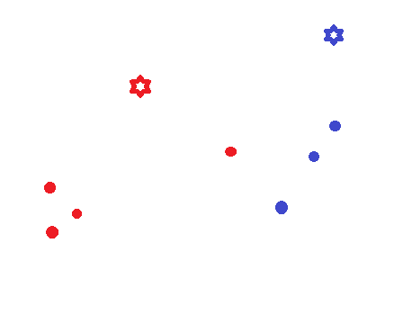
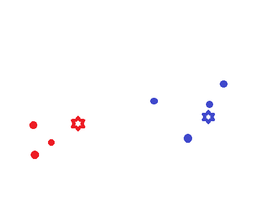
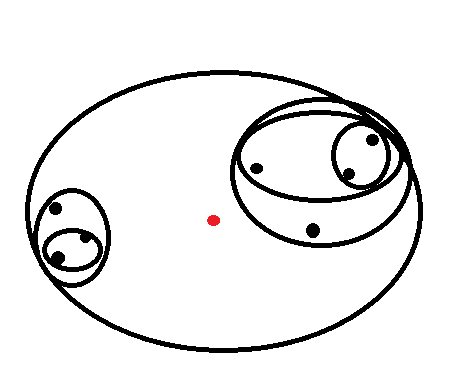

Cluster analysis allows us to find groups ("clusters") of related objects. This may be useful in, for example, marketing, as you may want to create three different advertisements that would attract the most possible customers, without just attracting the same people multiple ways.
Let's say you're trying to market a productivity app. You would apply cluster analysis to analyze your existing customer base and might discover that your ads will be the most effective if you target single moms, businessman dads, and overworked party animals. This third category may not have been previously obvious, and it could indicate a underutilized market just waiting for your app. Occasionally they find it on their own, and were thus found by the clustering algorithm, but think how many more you could get with some targeted advertising!
First, please excuse the low-tech graphics. They're extremely simple and contrived to make a point, and made with Paint to avoid having to deal with more complex programs or getting copyright permission from others.
There are multiple ways to cluster data, and none is perfect. Perhaps the best one is still to be discovered, or is dependent on your specific use. Here's a few, or you could always create your own!
K-Means is a prototype based clustering algorithm, which means it uses a representative data point ("prototype") to generate the clusters. The beauty of K-Means is that this prototype moves around until reasonably optimal. At the end you can describe the clusters reasonably well just by looking at the prototype points. We'll use this dataset to illustrate. Note the boundary where the reasonable human would mentally place the two clusters and that I colored the two clusters differently:
First, you'll want to decide how many clusters you want to achieve. This may be obvious from your application, but it could also be unknown, so make a reasonable guess for now. We'll call this number K. Next, you'll want to randomly generate K points ("centroids") somewhere throughout your data. The initial centroids should be random, but they should also be reasonable. If all your data is between 0 and 3 in each dimension, it won't make sense to put a centroid at <3, 458, -34>, so limit it to the bounds of the data. Here we've removed the mental cluster boundaries, reset the points to unclustered black, and added two random, separately-colored centroids:
Now the fun begins. You have K initial centroids, and each data point is going to find the closest centroid to itself. How, you may ask? Well, it should use some similarity metric between itself and each centroid, selecting the centroid with the highest similarity. (Euclidean Distance will probably work well for such a problem.) Now each point has identified itself with the closest centroid, and we've color-coded it to help you visualize:
Next is the most important step: The centroids now are forced to move to become more representative of their following points. In other words, we average all of the data points belonging to each cluster and move the centroid there:
Now we just repeat the last two steps until we reach a stopping condition. The points will relocate themselves to whichever centroid is nearest, and the centroids will move to their clusters' average position, and so on.
When do we stop? This may depend on how complex your dataset is, but the easiest reasonable stopping condition is when you go through a full iteration with no point changing its centroid selection. Another might be to stop when the SSE (a measure of the tightness of the clusters) fails to improve, but that's a little outside the scope of this page. Here, the centroids are now about where you'd expect and the points are all clustered correctly. You can continue running the algorithm all you want, but no point is ever going to switch clusters, so it's effectively done.
K-Means is a relatively simple algorithm to implement (see below, I actually did implement this one) but does have some issues to address. For one thing, you need to decide how many clusters to use. One approach is to use the aforementioned, but intentionally not described, SSE to decide the correct number. You just run the algorithm multiple times with multiple K and at some point the SSE will begin to behave differently than before if you plot it against K. (A "knee" in the graph.) It's effectively a big optimization problem, allowing you to find an ideal K. We also need to recognize that K-Means will not do well with outliers (which may tug at the centroids excessively) or non-globular shapes. Give it two intersecting lines to work with, and you will not be happy with the results!
Agglomerative hierarchical clustering (let's abbreviate it as AHC) works very differently; in fact, it won't return more than one cluster at all, but just one that has subclusters within it. Effectively it's one cluster that is an agglomeration of smaller clusters, each of which will hopefully be meaningful at its level of resolution. But if you want to generate some number of clusters other than one, it'll take some work to break the result down. Let's use the same example as before to step through AHC.
First, let's define every single point as a cluster. The key to AHC is that you continually combine the clusters that are closest into one new cluster that contains both of the old clusters inside it. Again, "closeness" depends on a similarity metric of your choosing and can be adjusted, but here we'll just use Euclidean Distance between the centers of the clusters. So we merge the two closest centroids and then just repeat the process until you're left with one cluster at the end. So here, let's say these two points are the closest, so we combine them into a new cluster. Note the red point indicating the new center of the cluster which we'll be comparing against.
Now maybe these two points on the other side are the next closest cluster; let's combine them into one.
At this point, we have five clusters - 2 of size 2 and 3 of size 1. The size 1 clusters do not necessarily have to be combined with each other first, although that can happen and did for the first two steps. In this case, the two clusters on the left are now the closest, so we combine them.
Hopefully you get the idea. Now we merge two clusters on the right which are relatively close.
And the right supercluster adds the lone straggler on the right side.
We only have two clusters left, so they get combined and we now have one large cluster!
The biggest issue with AHC is that it can be very computationally intensive. At the beginning you have to calculate the distance from every point to every other point, which can take a long time with a large, high-dimensional dataset. And then with each merge you'll have to calculate the distance from the new center to every other center all over again.
See chapter 8 of Introduction to Data Mining by Tan, Steinbach, and Kumar, 2006.
© 2011 by Oliver Chase. All rights reserved.